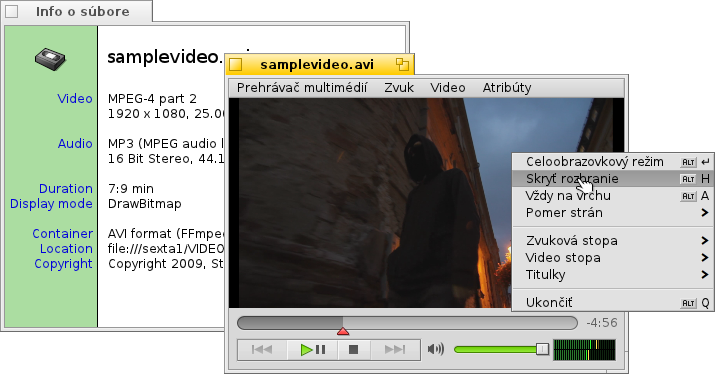
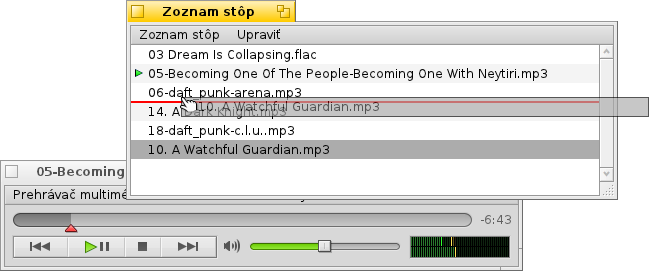
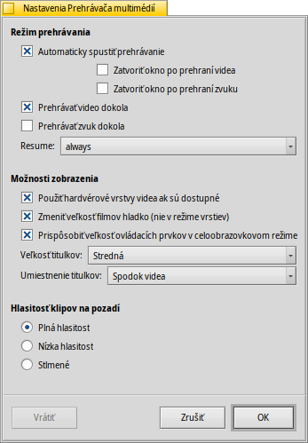

Slovenčina
Slovenčina Français
Français Deutsch
Deutsch Italiano
Italiano Русский
Русский Español
Español Svenska
Svenska 日本語
日本語 Українська
Українська 中文 ［中文］
中文 ［中文］ Português
Português Suomi
Suomi English
EnglishPrehrávač multimédií
| Panel: | ||
| Umiestnenie: | /boot/system/apps/MediaPlayer | |
| Nastavenia: | ~/config/settings/MediaPlayer |
Prehrávač multimédií je predvolený prehrávač všetkých audio a video súborov. Vďaka tomu, že na pozadí používa ffmpeg, podporuje hromadu populárnych typov súborov. Jeho rozhranie a ovládanie je také, aké by ste čakali:

Posuvník indikátora priebehu vám umožňuje rýchlo preskočiť na požadovanú pozíciu, držanie myši nad ním zobrazí aktuálny a zostávajúci čas klipu. Kliknutím na ukazovateľa času vpravo prepínate medzi dĺžkou, aktuálnym a zostávajúcim časom.
Pod tým nájdete obvyklé ovládacie prvky na preskočenie do ďalšej/predošlej stopy, prehrať/pozastaviť alebo zastaviť. Ďalej nasleduje ovládanie hlasitosti (kliknutím na reproduktor stlmíte zvuk) a VU meter.
Prehrávanie audio a videa
Pretože neexistujú žiadne funkcie špecifické pre prehrávanie zvukových súborov, budeme sa zaoberať videom a všeobecnými funkciami.
Pre všetky multimediálne súbory je dostupná možnosť (ALT I). Zobrazuje informácie o momentálne načítanom súbore, ako napr. dĺžka prehrávania alebo podrobnosti o audio/video stope a jej kodeku.
Najviac používané príkazy sú tiež dostupné v kontextovom menu, ktoré môžete vyvolať kliknutím pravým tlačidlom myši do oblasti videa. Užitočné hlavne v režime prehrávania na celej obrazovke.
V menu nájdete možnosti na zväčšenie okna do viacerých úrovní alebo vynútenie pomeru strán na niektoré štandardné hodnoty. Ponechanie pomeru strán na predvolených by malo najlepšie fungovať pri správne zakódovaných súboroch.
Prehrávač multimédií podporuje titulky vo formáte SRT. Aby sa vám titulky zobrazili, názvy ich súborov sa musia zhodovať s názvom súboru videa, tiež môže byť pridaný názov jazyka a príponu videa treba nahradiť príponou „.srt“. Napríklad:
MyMovie.avi MyMovie.Deutsch.srt MyMovie.English.srt MyMovie.Français.srt
Viaceré zvukové stopy, väčšinou používane vo video súboroch s viacerými jazykmi, môžete prepínať v submenu . Submenu ponúka to isté v prípade, že je dostupných viac video streamov.
Spustiť môžete klávesmi (ALT ENTER or F alebo dvojklikom lavým tlačidlom), skryť rámy okna Prehrávača multimédií a ovládacie prvky možnosťou (ALT H alebo dvojklikom pravým tlačidlom) alebo mať jeho okno (ALT A).
Zoznamy stôp
(ALT P) otvorí okno so súbormi, ktoré sú momentálne v poradí na prehrávanie. Dvojitým kliknutím na položku sa súbor začne prehrávať.
Viac súborov môžete pridať pretiahnutím ich do zoznamu myšou a takisto môžete pretiahnutím myšou meniť ich poradie. Z menu môžete alebo položky zo zoznamu alebo vymazať príslušný súbor možnosťou (ALT T).
Samozrejme môžete zoznam stôp a neskôr ho znova alebo spustiť ho jednoduchým dvojklikom na súbor zoznamu stôp.
Nastavenia
Existuje viacero nastavení na doladenie správania Prehrávača multimédií:
Prvá skupina, , je ľahko pochopiteľná. Automaticky spustiť prehrávanie, zatvoriť okno po prehraní alebo prehrávať klip dokola.
Nasledujú rôzne .
Môžete , čo zníži záťaž na CPU, no funguje iba pre jedno okno a potrebuje ovládače video karty, ktoré to podporujú.
Môžete (nie v režime vrstiev), čím sa využije veľmi rýchle filtrovanie na zahľadenie inak kockato vyzerajúcich pixlov pri zväčšenom videu alebo celoobrazovkovom režime.
Môžete
ak preferujete väčšie ovládacie prvky, možno keď sledujete video v celoobrazovkovom režime z väčšej vzdialenosti.
Ďalej sú tu nastavenia a . Tie môžu byť zobrazené na , čím budú video stále prekrývať. Alebo na , čím môžete meniť veľkosť videa zvisle a mať tak titulky v čiernom páse na spodku.
Posledné nastavenie určuje hlasitosť klipov, ktoré sa prehrávajú na pozadí. Môžete ich nechať revať na , menej mätúcej alebo ich mať .
Ovládanie klávesnicou
Prehrávač multimédií ponúka pohodlné kombinácie klávesov na ovládanie prehrávania bez použitia myši.
| Z | Preskočiť na predchádzajúcu stopu | |
| X | Prehrať | |
| C | Pozastaviť | |
| V | Zastaviť | |
| B | Preskočiť na nasledujúcu stopu |
Týmto klávesom sú priradené funkcie ovládacích tlačidiel. Vždy sú v ľavej dolnej časti klávesnice, teda sú použité nezávisle od vášho aktuálneho mapovania klávesov. Hore uvedené klávesy zodpovedajú štandardnému mapovaniu klávesnice USA.
| → | Hľadať dopredu | |
| SHIFT → | Skočiť dopredu o 10 sekúnd | |
| ALT → | Skočiť dopredu o 30 sekúnd | |
| ← | Hľadať dozadu | |
| SHIFT ← | Skočiť dozadu o 10 sekúnd | |
| ALT ← | Skočiť dozadu o 30 sekúnd | |
| ↑ | Zvýšiť hlasitosť | |
| ↓ | Znížiť hlasitosť | |
| ALT ↑ | Preskočiť na predchádzajúcu stopu | |
| ALT ↓ | Preskočiť na nasledujúcu stopu | |
| Spacebar | Prehrať/pozastaviť | |
| ALT ENTER | Spustiť celoobrazovkový režim (tiež možné dvojitý kliknutím ľavým tlačidlom myši do oblasti videa) |